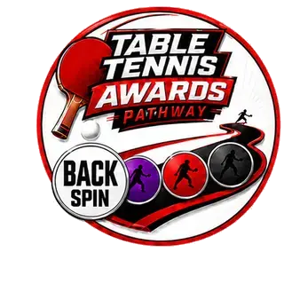
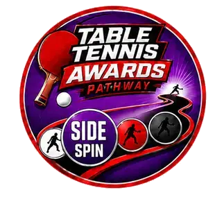
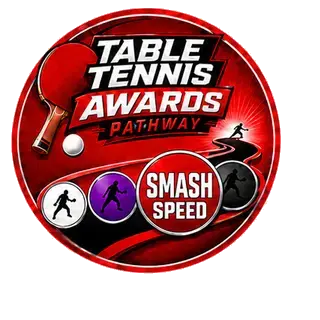
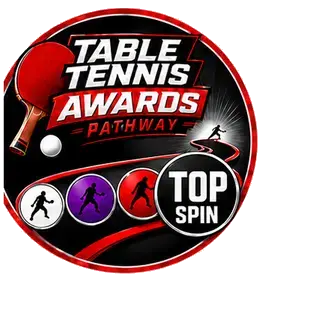
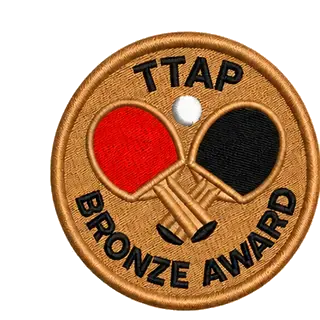
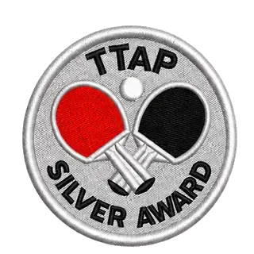
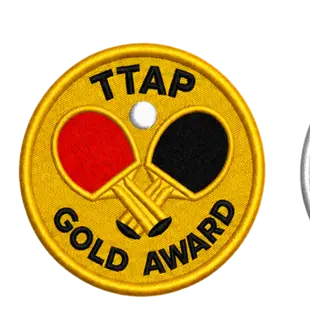
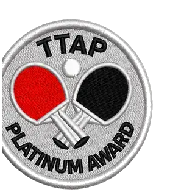

Milestone 01
Back Spin
Generated with backspin servesThe first milestone develops purposeful backspin and the confidence to make the serve work for the player.

The award collection
Each award has a clear purpose, a practical assessment and a lasting reward. Players who meet the standard receive a badge and certificate to celebrate their success.

Milestone Awards
Four technical milestones develop backspin, sidespin, smash speed and topspin.

Milestone 01
The first milestone develops purposeful backspin and the confidence to make the serve work for the player.

Milestone 02
Players learn to shape the ball with sidespin, adding variation and new tactical possibilities to their service game.

Milestone 03
A celebration of controlled power: building the timing, technique and confidence needed to finish the point.

Milestone 04
Players demonstrate a reliable topspin loop and learn to turn rotation into a consistent attacking weapon.
Pathway Awards
Four broader awards recognise the player’s overall development, from a strong foundation to an advanced all-round game.

Pathway level 1
A confident foundation. Players demonstrate core strokes, movement and control across a balanced assessment.

Pathway level 2
Growing consistency and range. Players connect skills with stronger placement, decision-making and recovery.

Pathway level 3
A rounded, capable game. Players show technical quality and dependable execution across more demanding tasks.

Pathway level 4
The highest pathway standard, recognising advanced ability, consistency and complete all-round performance.
For clubs
When a club purchases an award assessment pack, it receives everything needed to prepare players and run that assessment confidently:
Only clubs that have purchased the relevant assessment pack can order certificates and badges for players who successfully complete that assessment.